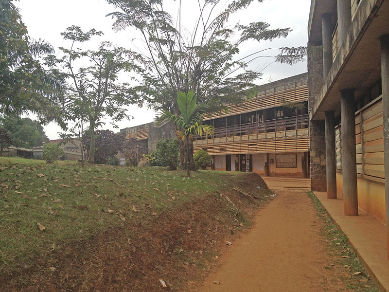

La Faculté des Sciences de l'Université de Yaoundé I
La Faculté des Sciences de l’Université de Yaoundé fut créée en juillet 1962 au
sein de l’Université Fédérale du Cameroun (décret n°62/DF/289 du 26 juillet 1962).
Les premiers enseignements se sont déroulés dans les bâtisses de l’actuel deuxième
campus ou Annexe. En octobre 1967, fut inauguré le Campus principal.
Elle est devenue
la Faculté des Sciences de l’Université de Yaoundé I après la réforme universitaire
de 1993 avec les décrets 93/027 et 93/036 du 19 janvier 1993 du Président de la
République portant respectivement dispositions communes aux universités d’Etat
et organisation administrative et académique de l’Université de Yaoundé I.
Savvoir plus sur La Faculté des Sciences de l'Université de Yaoundé
La Faculté des Sciences qui est l’un des établissements de l’Université de Yaoundé I
est constituée de deux campus. Le campus principal situé à l’Ouest du Rectorat est
implanté sur le versant nord-ouest du plateau Atemengue. Le deuxième campus couramment appelé extension.
Outre les missions générales de l’Université de Yaoundé I, la Faculté des Sciences
est particulièrement chargée de la promotion des Sciences Fondamentales en général,
des Sciences appliquées à travers des enseignements professionnalisants, de l’appui
au développement et à la promotion sociale et culturelle.